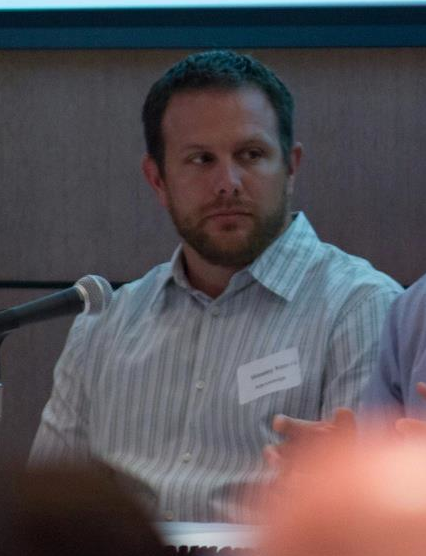

Software Engineer
Google
wesley [dot] n [dot] kerr [at] gmail [dot] com

Personal
Publications
Google Scholar
GitHub Profile
Research
UA Time Series
Wubble World
Wubble World 2D
Swarm Research
I currently work for Google in the Machine Intelligence group. Previously, I worked for Riot Games as part of the Insights group. We were responsible for helping find insights from data (large and small). I love game development and continue building small games in my free time. I am currently working on a game inspired by iTanks. iTanks is a game made at the first UW-Stout 48 hour game jam by Ryan Appel, Tegan Moersfelder, and myself. Once I make further progress on the game, I plan to upload screenshots and playable builds. The game is written in Java using the libGDX game development framework.
I am currently working in Machine Intelligence at Google and have previously worked building large scale recommender systems for Riot Games and for Adknowledge Inc. One of my fun side projects that I work on to experiment with the latest tools and technologies is the Steam Recommender website.
Most of my research lies at the intersection of Machine Learning, Artificial Intelligence and Cognitive Science. My dissertation research explored a developmental approach to activity recognition, laying the foundations for verb learning in a situated environment. A large portion of the research was based on data gathered from the Wubble World and Wubble World 2D virtual environments. Wubble World is an interactive world for 10-12 year olds, wherein children interact with each other and their pet wubble. These interactions provide learning experiences for the wubble and over time children can see their wubble learning more and more language. Wubble World 2D followed the Wubble World project and focused on developing an environment that afforded more autonomous behaviors for the wubbles and yielded more extensive data collection.
In my free time, I play tabletop wargames and develop / think about war simulations. Work is always slowly progressing on a war simulation game that captures the physics of ancient battlefields abstractly and accurately. The tactics needed to successfully operate in this environment should be those outlined in Clausewitz's classic "On War".
As a professor, I am interested in all aspects of video game design and research. There are many research projects that fall into these categories. Previously, I worked with undergraduate students developing AI for Starcraft. I also work with students in independent studies designing and implementing new video games that flesh out potentially new game mechanics.
I am also interested in different forms of swarm intelligence and multiagent systems. The idea that complex interactions can arise from simple rules has always intrigued me.